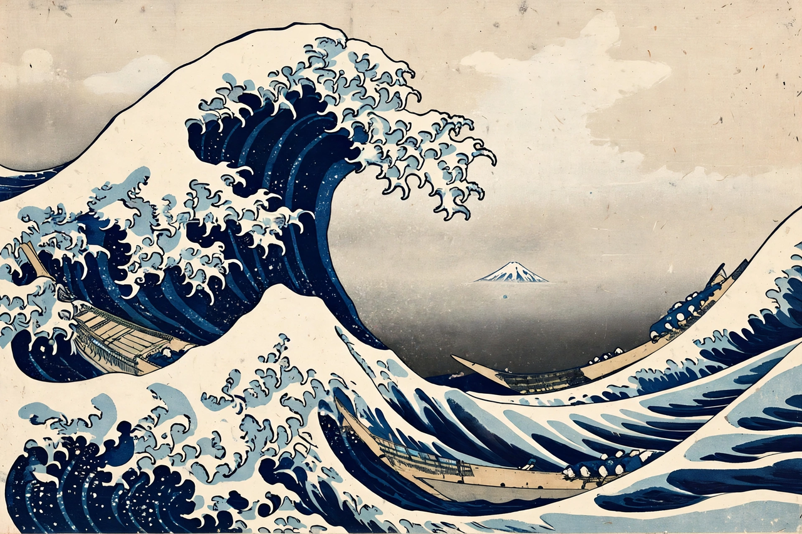

Hokusai
From Wikipedia, the free encyclopedia

[Image: The Great Wave off Kanagawa by Katsushika Hokusai, c. 1831]The Great Wave off Kanagawa by Katsushika Hokusai, c. 1831
Katsushika Hokusai (1760–1849) was a Japanese ukiyo-e artist of the Edo period, one of the most famous Japanese artists in the world. His woodblock print series Thirty-six Views of Mount Fuji (c. 1830–32) includes The Great Wave off Kanagawa — the towering, claw-fingered wave that has become the single most recognisable image of Japanese art.
Apprenticed to a woodblock engraver at fourteen and a publisher's studio at eighteen, Hokusai worked under a succession of art names through a long, poor, restless life — moving house dozens of times, struck by lightning, changing styles with each decade. His sketchbooks (Hokusai Manga) taught generations of artists; his late manuals brim with the confidence of his famous boast that at 110 everything he drew would be alive. His daughter Ōi was herself a gifted artist and his assistant.
After Japan opened to the world in the 1850s, Hokusai's prints flooded Europe and ignited Japonisme: Van Gogh copied him, Debussy put the Great Wave on the score of La mer, and Monet collected his prints (many hang at Giverny). His wave now rides everything from T-shirts to emoji 🌊 — as universal a symbol of the sea as art has made, in dialogue across the world with images from Van Gogh to the National Gallery's masters.